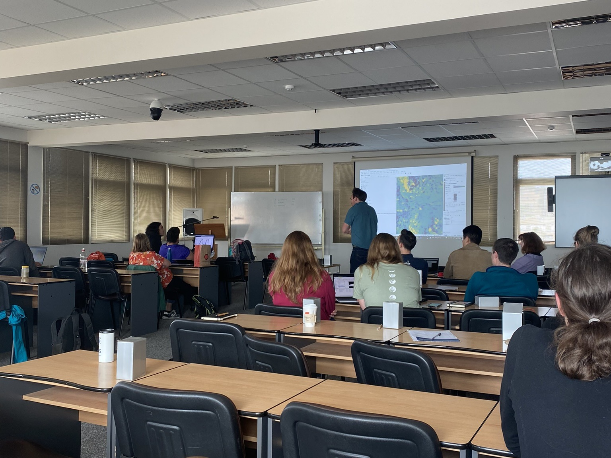
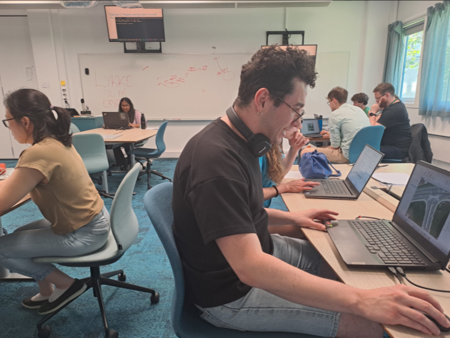
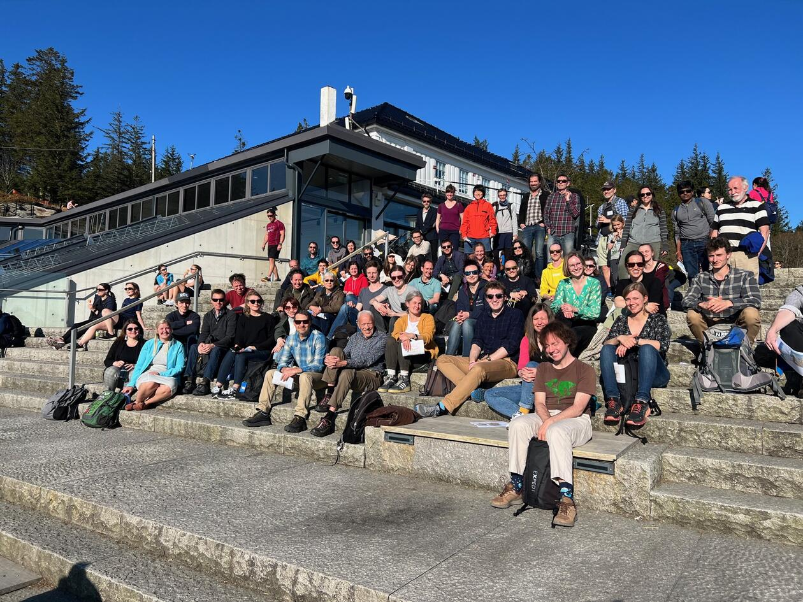
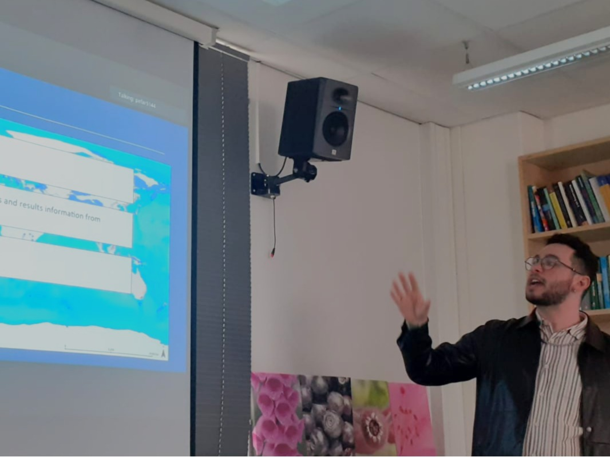
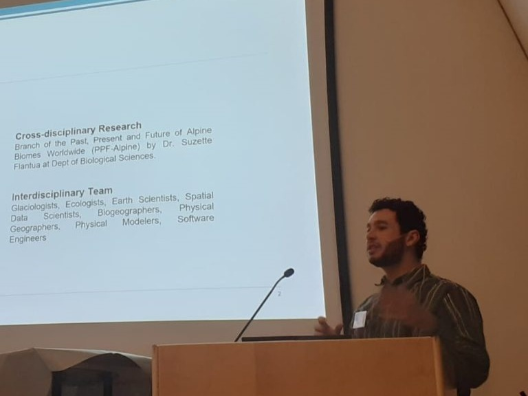

🏅 Grants
Student4Student Summerschool
This grant covered the full registration fee (€450) for my participation in the Student4Student Summer School in Innsbruck.
European Geosciences Union 2025 (EGU25) General Assembly
I was awarded an EGU25 grant that included a full registration waiver (€525) and an additional €500 in travel support to attend the European Geosciences Union General Assembly in Vienna.
🌍 International Conferences
International Mountain Conference 2025 (IMC25)
Date: 2025.11.14
Place: Innsbruck, Austria
I was awarded an oral presentation at the International Mountain Conference 2025, under the session FS 3.150: Methodological advances in mountain research. In this talk, I will present ongoing developments of the GLACIMONTIS project—an open-access global geodatabase of mountain glacier extents spanning 57–14 ka BP. The presentation will showcase methodological innovations in data integration and their implications for modeling paleoenvironmental conditions in mountain systems. IMC25 will provide a valuable opportunity to connect with researchers working at the forefront of high-altitude climate and landscape studies.
European Geosciences Union 2025 (EGU25)
Date: 2025.04.29
Place: Viena, Austria
I will deliver an oral presentation of our abstract titled “Global geodatabase of mountain glacier extents at the Last Glacial Maximum” at the EGU25 General Assembly. As the first author and presenter, I will highlight our synthesis of glacier reconstructions from over 219 studies, exploring their applications in paleoclimate analysis, species distribution modelling, and glacier models validation. This presentation aims to foster dialogue on the role of curated spatial data in advancing our understanding of Quaternary climate variability and mountain landscape evolution.
European Geosciences Union 2024 (EGU24)
Date: 2024.04.16
Place: Viena, Austria
Although I did not attend the EGU24 General Assembly, I was proud to contribute to the abstract “Monitoring the physical processes driving the mass loss of Tapado Glacier, Desert Andes of Chile”, presented by Prof. Álvaro Ayala. The manuscript incorporated key findings from my master’s thesis, which focused on the glaciological dynamics of Tapado Glacier. This contribution reflects the broader relevance of my research in understanding contemporary glacier change in high mountain environments.
🏫 Summer Schools & Study Exchange
Student4Student Summer School
Date: 2025.11.07 – 2025.11.12
Place: Innsbruck, Austria
I will participate in the Student4Student Summer School (S4SS) as a grant-supported attendee and presenter. The GLACIMONTIS project was selected for inclusion in the session FS 3.509: Do we model what we measure?, which focuses on bridging empirical data and modeling practices in mountain research. I will present ongoing work on spatial uncertainty in paleoglacier reconstructions and discuss how GLACIMONTIS can be used to test and refine glaciological models. The summer school provides a unique space for peer-to-peer learning, interdisciplinary exchange, and critical reflection on the tools we use to understand past environmental change.
International Summer School (Chile)
Date: 2022.12.04 – 2022.12.15
Place: La Serena, Chile
I took part in an 11-day international summer school organized around Tapado Glacier, focusing on the application of Unmanned Aerial Vehicles (UAVs) in cryosphere and landscape research. Through field-based training, data acquisition, and analysis workshops, I gained hands-on experience in UAV operations, structure-from-motion photogrammetry, and digital elevation model generation. The program also emphasized collaborative research and included site-specific discussions on glacier-climate interactions in the high-altitude Andes. This training directly supported the methodological foundation of my master’s thesis and strengthened ties between researchers from South America and Europe.

Erasmus+ Exchange at Charles University
Date: 2022.09.24 – 2023.02.25
Place: Prague, Czech Republic
As part of my master’s studies, I took part in an Erasmus+ exchange at Charles University in Prague. During the semester, I focused on the application of Geographic Information Systems (GIS) and Remote Sensing (RS) in environmental and urban analysis. The experience allowed me to engage with interdisciplinary coursework and deepen my technical skills in spatial data processing, urban land cover classification, and satellite image interpretation. Studying in an international academic setting also broadened my perspective on how geospatial technologies are used in sustainable urban planning and landscape management across Europe.
Bachelor Exchange at the University of Bergen (UiB)
Date: 2021.01.04 – 2021.12.20
Place: Bergen, Norway
During my undergraduate studies in Geography, I spent one academic year at the University of Bergen through a bilateral exchange program. My coursework focused on Quaternary geomorphology, cryosphere dynamics, and advanced GIS and Remote Sensing techniques. This period was formative in shaping my interest in long-term environmental change and mountain glaciation, as I gained hands-on experience with spatial data analysis, landform mapping, and proxy-based climate interpretation. The exchange also marked my first academic involvement in cryospheric science and laid the foundation for my ongoing focus on glacial and paleoenvironmental research in high-mountain regions.
🛠️ Workshops
Geospatial Artificial Intelligence Workshop
Date: 2024.05.23
Place: Bergen, Norway
I attended the Geospatial Artificial Intelligence Workshop, a two-day event co-organized by Geodata, iEarth, and the University of Bergen. The workshop explored the integration of deep learning algorithms in geospatial workflows, with a focus on remote sensing image classification. Through hands-on exercises and expert-led sessions, I deepened my understanding of convolutional neural networks and their applications to Earth observation data. This experience strengthened my ability to evaluate AI tools for cryosphere studies and opened pathways for future work at the intersection of geoinformatics and environmental change.

International Workshop on Greenland Ice Sheet
Date: 2023.04.27
Place: Bergen, Norway
I volunteered as an assistant for the International Workshop on the Greenland Ice Sheet, which brought together scientists to share recent advances in Greenland ice sheet dynamics and their implications for climate change and sea-level rise. My role included logistical and technical support throughout the event. This workshop provided me with a broader context for academic event management and organization.

🎤 Talks
Lunch Talk – Ecological and Environmental Change Research Group
Date: 2025.03.28
Place: Bergen, Norway
I delivered a departmental Lunch Talk to the Ecological and Environmental Change Research Group, where I presented ongoing work from the GLACIMONTIS project. My presentation focused on the global geodatabase of mountain glacier extents during the Last Glacial Maximum and its implications for paleoecological reconstructions. I discussed the database’s role in identifying glacial refugia and informing species distribution models in mountainous environments. The talk encouraged interdisciplinary discussion among geographers, ecologists, and paleoclimatologists, strengthening local interest in cross-scalar Quaternary research.

Western US Paleoglaciers Working Group – Speaker Series
Date: 2025.03.14
Place: Online
I was invited to speak in the 2025 Winter Speaker Series of the Western US Paleoglaciers Working Group. My presentation focused on the methodology and results of the GLACIMONTIS initiative, emphasizing global patterns in paleoglacier extent and the challenges of harmonizing spatial data from diverse reconstructions. I also shared preliminary findings on mountain glacier variability across regions and discussed future directions in open-access paleodata publishing.
Bjerknes Annual Meeting 2025
Date: 2024.10.01
Place: Bergen, Norway
At the Bjerknes Annual Meeting, I presented my ongoing work on paleoglaciers and their relevance to present-day mountain ecosystem dynamics. The event gathered members of the Bjerknes Centre for Climate Research, fostering exchanges between Earth system scientists across disciplines. I received valuable feedback from keynote guest Dr. Erika Coppola, particularly on integrating paleodata into climate model validation efforts.

Lunch Talk – Ecological and Environmental Change Group
Date: 2024.04.12
Place: Bergen, Norway
I presented a departmental Lunch Talk to the Ecological and Environmental Change Research Group, focusing on literature review strategies and the accessibility of paleoclimate data. I shared my experiences with systematic database compilation and discussed tools for improving reproducibility and transparency in geoscientific synthesis work.
XVI Colóquio de Estudantes de Pós-graduação da USP
Date: 2023.10.19
Place: São Paulo, Brazil
I presented my master’s thesis at the XVI Colóquio de Estudantes de Pós-graduação at the University of São Paulo (USP), where I discussed glacial dynamics at Tapado Glacier and the development of a field-based monitoring strategy. The event fostered interdisciplinary exchange and provided a platform for emerging research across Brazilian graduate programs. My talk also highlighted the collaboration between USP and the University of Bergen (UiB), strengthening international academic ties.
GIS/Remote Sensing Workshop Group Get-Together
Date: 2023.09.20
Place: Bergen, Norway
During a departmental gathering of the GIS and Remote Sensing Workshop Group, I presented results and methods from my master’s thesis on glacial melt processes at Tapado Glacier, Chile. The event brought together researchers and students interested in spatial technologies, facilitating discussions on UAV data processing, DEM accuracy, and landscape change detection. My contribution helped demonstrate the applicability of remote sensing methods in high-mountain environments under climate stress.
Panorama Atual dos Projetos de Pesquisa Integrados (USP/UNIR)
Date: 2022.12.16
Place: São Paulo, Brazil
I presented my master’s thesis project at the event Panorama Atual dos Projetos de Pesquisa Integrados, which focused on the progress of collaborative initiatives between the University of São Paulo (USP) and the Federal University of Rondônia (UNIR). My talk emphasized the value of international research collaboration, highlighting fieldwork in the Chilean Andes and my joint academic affiliation with the University of Bergen (UiB). The event served as a platform for interdisciplinary dialogue and cross-institutional research planning in Brazil.